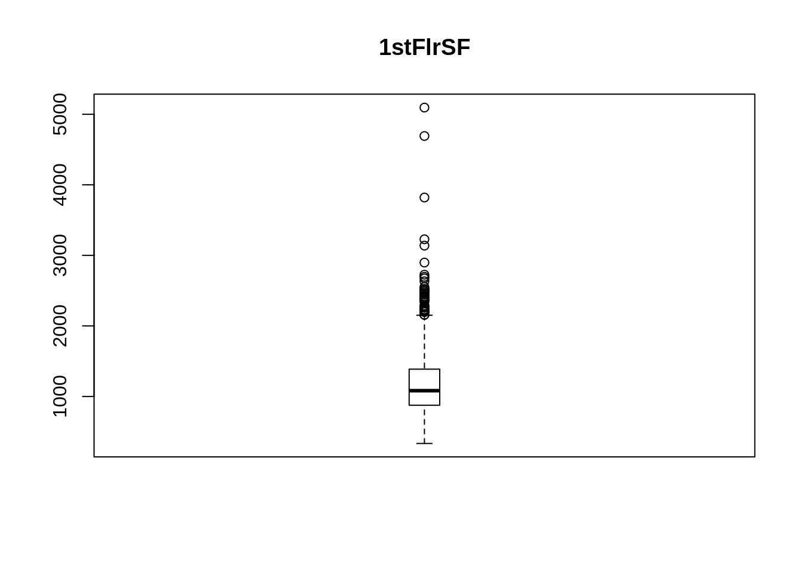

Métodos de Análisis de Datos
Ana Fernández Cruz, Jesús Gallego Olivas y Miguel Ángel Sánchez Alcázar.
19 de Diciembre de 2019
Antes de empezar a realizar el estudio debemos unificar los datos. Inicialmente los disponemos en tres archivos csv, ‘train.csv’, ‘test.csv’ y ‘sample_submission.csv’.
cols_remove_nas <-c('Alley','BsmtQual','BsmtCond','BsmtExposure','BsmtFinType1','BsmtFinType2','GarageType','GarageFinish','GarageQual','GarageCond','PoolQC','Fence','MiscFeature','FireplaceQu')
dataset <- mutate_at(dataset, cols_remove_nas,
list(~ifelse(is.na(.), 'NA',.)) )var_discretas <- c('BsmtFullBath','BsmtHalfBath','FullBath','HalfBath','BedroomAbvGr','KitchenAbvGr','TotRmsAbvGrd','Fireplaces','GarageCars','GarageYrBlt','YearBuilt','YearRemodAdd','YrSold','MoSold')
var_continuas <- c('LotFrontage','LotArea','MasVnrArea','BsmtFinSF1','BsmtFinSF2','BsmtUnfSF','TotalBsmtSF','1stFlrSF','2ndFlrSF','LowQualFinSF','GrLivArea','GarageArea','WoodDeckSF','OpenPorchSF','EnclosedPorch', '3SsnPorch','ScreenPorch','PoolArea','MiscVal','SalePrice')
var_continuas_sin_columnas_imputacion <- c('LotFrontage','LotArea','MasVnrArea','BsmtFinSF1','BsmtFinSF2','BsmtUnfSF','TotalBsmtSF','1stFlrSF','2ndFlrSF','LowQualFinSF','GrLivArea','GarageArea','WoodDeckSF','OpenPorchSF','EnclosedPorch', '3SsnPorch','ScreenPorch','PoolArea','MiscVal','SalePrice')
var_ordinales <- c('LotShape','Utilities','LandSlope','OverallQual','OverallCond','ExterQual','ExterCond','BsmtQual','BsmtCond','BsmtExposure','BsmtFinType1','BsmtFinType2','HeatingQC','CentralAir','Electrical','KitchenQual','Functional','FireplaceQu','GarageFinish','GarageQual','GarageCond','PavedDrive','PoolQC','Fence')
var_nominales <- c('MSSubClass','MSZoning','Street','Alley','LandContour','LotConfig','Neighborhood','Condition1','Condition2','BldgType','HouseStyle','RoofStyle','RoofMatl','Exterior1st',
'Exterior2nd','MasVnrType','Foundation','Heating','GarageType','MiscFeature', 'SaleType','SaleCondition')
var_continuas_discretas = c(var_continuas,var_discretas)
var_continuas_discretas_sin_imputacion = c(var_continuas_sin_columnas_imputacion,var_discretas)
var_modelo = c()
var_columnas_eliminadas = c()
var_transformacion_log = c()
var_eliminar_correlacion = c()
var_creadas_transformacion = c()list_split1 <- dataset %>% split_dataframe(.1)
validation <- list_split1[[1]] # 10%
trainTest <- list_split1[[2]] # 90%
validationIds = validation %>% dplyr::select('Id')
trainTestIds = trainTest %>% dplyr::select('Id')
#Dividimos el dataset 70% - 30%
list_split <- trainTest %>% split_dataframe(.7)
train <- list_split[[1]] # 70%
test <- list_split[[2]] # 30%
trainIds = train %>% dplyr::select('Id')
testIds = test %>% dplyr::select('Id')elementosBajaVarianza <- nearZeroVar(dataset,freqCut = 95/5,uniqueCut = 10)
# funcion para eliminar elementos con baja correlacion
lmp <- function (modelobject) {
if (class(modelobject) != "lm") stop("No es un objeto de tipo regresion lineal 'lm' ")
f <- summary(modelobject)$fstatistic
p <- pf(f[1],f[2],f[3],lower.tail=F)
attributes(p) <- NULL
return(p)
}
# estas columna dan problemas, la varible 3SnnPorch empieza por un número y a la hora de ejecutar el modelo para ver si son significativas en la regresión
var_columnas_eliminadas = c(var_columnas_eliminadas,'3SsnPorch')
for(i in colnames(dataset)[elementosBajaVarianza]) {
if(i != '3SsnPorch') {
modelRegression <- lm(reformulate(termlabels = i, response = 'SalePrice') ,data=dataset)
if(lmp(modelRegression) >.05) {
var_eliminar_correlacion = c(var_eliminar_correlacion,i)
}
}
}
(var_eliminar_correlacion)## [1] "Street" "Utilities" "LandSlope" "Condition2" "BsmtFinSF2"
## [6] "LowQualFinSF" "MiscFeature" "MiscVal"var_continuas <- c('LotArea','MasVnrArea','BsmtFinSF1','BsmtFinSF2','BsmtUnfSF','TotalBsmtSF','1stFlrSF','2ndFlrSF','LowQualFinSF','GrLivArea','GarageArea','WoodDeckSF','OpenPorchSF','EnclosedPorch', '3SsnPorch','ScreenPorch','PoolArea','MiscVal','SalePrice')
#dataset %>% dplyr::select(var_continuas) %>% plot_histogram()correlacionesProblematicas <- findCorrelation(cor(na.omit(dataset %>% dplyr::select(var_continuas))),cutoff = 0.8, verbose = FALSE, names = TRUE)
correlacionesProblematicas## [1] "1stFlrSF"library(EnvStats)##
## Attaching package: 'EnvStats'## The following objects are masked from 'package:moments':
##
## kurtosis, skewness## The following object is masked from 'package:MASS':
##
## boxcox## The following objects are masked from 'package:stats':
##
## predict, predict.lm## The following object is masked from 'package:base':
##
## print.defaultlistaOutliers <- list()
#listaBoxPlots <- c()
dataset_var_continuas <- dataset %>% dplyr::select(var_continuas)
iterator = 1
listaPosOutliers <- c()
for(i in colnames(dataset_var_continuas)) {
outlier_values <- boxplot.stats(dataset_var_continuas[[i]])$out
boxPlotDibujar <- boxplot(dataset_var_continuas[[i]], main=i, boxwex=0.1)
#if(i %in% c('LotArea','1stFlrSF','GrLivArea','PoolArea','TotalBsmtSF')) {
# boxPlotDibujar
#}
#listaBoxPlots <- c(listaBoxPlots,boxPlotDibujar)
outliersRosen <- rosnerTest(dataset_var_continuas[[i]], k = 6, warn = F)
listaOutliers[[iterator]] <- outliersRosen
iterator<- iterator +1
if(i %in% c('LotArea','1stFlrSF','GrLivArea','PoolArea','TotalBsmtSF','SalePrice')) {
listaPosOutliers <- c(listaPosOutliers,outliersRosen$all.stats$Obs.Num)
}
}## Warning in rosnerTest(dataset_var_continuas[[i]], k = 6, warn = F): 23
## observations with NA/NaN/Inf in 'x' removed.## Warning in rosnerTest(dataset_var_continuas[[i]], k = 6, warn = F): 1
## observations with NA/NaN/Inf in 'x' removed.## Warning in rosnerTest(dataset_var_continuas[[i]], k = 6, warn = F): 1
## observations with NA/NaN/Inf in 'x' removed.## Warning in rosnerTest(dataset_var_continuas[[i]], k = 6, warn = F): 1
## observations with NA/NaN/Inf in 'x' removed.## Warning in rosnerTest(dataset_var_continuas[[i]], k = 6, warn = F): 1
## observations with NA/NaN/Inf in 'x' removed.
## Warning in rosnerTest(dataset_var_continuas[[i]], k = 6, warn = F): 1
## observations with NA/NaN/Inf in 'x' removed.
listaPosOutliers <- unique(listaPosOutliers)var_modelo_with_SalePrice = c(var_modelo,'SalePrice')
var_columnas_eliminadas = c('TotRmsAbvGrd','GarageYrBlt','GarageCars','TotalBsmtSF','1stFlrSF','2ndFlrSF','BsmtFinSF2','1stFlrSF','2ndFlrSF','FullBath','HalfBath','BsmtFullBath','BsmtHalfBath','OpenPorchSF','3SsnPorch','EnclosedPorch','ScreenPorch','WoodDeckSF','GarageFinish','hasFirePlaces','LotFrontage')
var_columnas_eliminadas_bajo_p_valor = c('LandSlope')
var_transformacion_log = c('TotalSF')
var_eliminar_correlacion = c(var_eliminar_correlacion,c('TotRmsAbvGrd','GarageYrBlt','GarageCars'))dataset <- dataset %>% dplyr::mutate( TotalSF = TotalBsmtSF + `1stFlrSF` + `2ndFlrSF` )
dataset <- dataset %>% dplyr::mutate( Total_Bathrooms = FullBath + 0.5*HalfBath + BsmtFullBath + 0.5*BsmtHalfBath )
dataset <- dataset %>% dplyr::mutate( Total_porch_SF = OpenPorchSF +`3SsnPorch` + EnclosedPorch + ScreenPorch + WoodDeckSF )
var_creadas_transformacion = c( 'TotalSF','Total_Bathrooms','Total_porch_SF','hasPool','hasGarage','hasFirePlaces','has2ndFloor')# YearBuilt: discretizamos la variable en tramos
# YearRemodAdd: discretizamos la variable en tramos
dataset$YearBuilt <- cut(dataset$YearBuilt,
breaks=c(-Inf, 1910,1920,1930,1940,1950,1960,1970,1980,1990,Inf),
labels=c("_1910","1910_1920","1920_1930","1930_1940", "1940_1950","1950_1960","1960_1970","1970_1980","1980_1990","1990_"))
dataset$YearRemodAdd <- cut(dataset$YearRemodAdd,
breaks=c(-Inf, 1910,1920,1930,1940,1950,1960,1970,1980,1990,Inf),
labels=c("_1910","1910_1920","1920_1930","1930_1940", "1940_1950","1950_1960","1960_1970","1970_1980","1980_1990","1990_")) #MSSubClass:
dataset <- dataset %>% dplyr::mutate( hasPool := ifelse(PoolArea > 0 && not(is.na(PoolArea)), TRUE, FALSE))
#dataset <- dataset %>% dplyr::mutate( hasBasement := ifelse(TotalBsmtSF > 0, TRUE, FALSE))
dataset <- dataset %>% dplyr::mutate( hasFirePlaces := ifelse(Fireplaces > 0 && not(is.na(Fireplaces)), TRUE, FALSE))
dataset <- dataset %>% dplyr::mutate( has2ndFloor := ifelse(`2ndFlrSF` > 0 && not(is.na(`2ndFlrSF`)), TRUE, FALSE)) —————- 1. IMPUTAMOS
Como hay muchas variables que no tienen valores faltantes, vamos a crear un dataset únicamente con las columnas que tienen missings para poder analizar mejor los datos. Para ello:
na_counts <- sapply(dataset, function(x) sum(is.na(x)))
na_counts_sort <- sort(na_counts, decreasing = TRUE)
na_counts_sort <- na_counts_sort[1:20]
(na_counts_sort)## LotFrontage GarageYrBlt MasVnrType MasVnrArea MSZoning
## 486 159 24 23 4
## Utilities BsmtFullBath BsmtHalfBath Functional Total_Bathrooms
## 2 2 2 2 2
## Exterior1st Exterior2nd BsmtFinSF1 BsmtFinSF2 BsmtUnfSF
## 1 1 1 1 1
## TotalBsmtSF Electrical KitchenQual GarageCars GarageArea
## 1 1 1 1 1dataset_na <- dataset %>% dplyr::select(LotFrontage, MasVnrArea, BsmtFinSF1, BsmtFinSF2, BsmtUnfSF, TotalBsmtSF, GarageArea, GarageYrBlt, BsmtFullBath, BsmtHalfBath, GarageCars, KitchenQual, Electrical, MasVnrType, MSZoning, Exterior1st, Exterior2nd, SaleType)colMeans(is.na(dataset_na))## LotFrontage MasVnrArea BsmtFinSF1 BsmtFinSF2 BsmtUnfSF TotalBsmtSF
## 0.1664953751 0.0078794108 0.0003425831 0.0003425831 0.0003425831 0.0003425831
## GarageArea GarageYrBlt BsmtFullBath BsmtHalfBath GarageCars KitchenQual
## 0.0003425831 0.0544707091 0.0006851662 0.0006851662 0.0003425831 0.0003425831
## Electrical MasVnrType MSZoning Exterior1st Exterior2nd SaleType
## 0.0003425831 0.0082219938 0.0013703323 0.0003425831 0.0003425831 0.0003425831#summary_antes_imputar <- summary(train)
#para las variables cuantitativas con una proporción del faltantes menor que el 3%,
#imputaremos el valor de la media
cuantitativas <- c('MasVnrArea','GarageCars','GarageArea', 'BsmtFinSF1', 'BsmtFinSF2', 'BsmtUnfSF', 'TotalBsmtSF','BsmtFullBath', 'BsmtHalfBath')
for (i in cuantitativas){
list_values <- ifelse(is.na(dataset[[i]]),
round(mean(train[[i]], na.rm=TRUE), 0), dataset[[i]])
dataset[[i]] <- list_values
}
dataset## # A tibble: 2,919 x 87
## Id MSSubClass MSZoning LotFrontage LotArea Street Alley LotShape
## <dbl> <dbl> <chr> <dbl> <dbl> <chr> <chr> <chr>
## 1 1 60 RL 65 8450 Pave NA Reg
## 2 2 20 RL 80 9600 Pave NA Reg
## 3 3 60 RL 68 11250 Pave NA IR1
## 4 4 70 RL 60 9550 Pave NA IR1
## 5 5 60 RL 84 14260 Pave NA IR1
## 6 6 50 RL 85 14115 Pave NA IR1
## 7 7 20 RL 75 10084 Pave NA Reg
## 8 8 60 RL NA 10382 Pave NA IR1
## 9 9 50 RM 51 6120 Pave NA Reg
## 10 10 190 RL 50 7420 Pave NA Reg
## # … with 2,909 more rows, and 79 more variables: LandContour <chr>,
## # Utilities <chr>, LotConfig <chr>, LandSlope <chr>, Neighborhood <chr>,
## # Condition1 <chr>, Condition2 <chr>, BldgType <chr>, HouseStyle <chr>,
## # OverallQual <dbl>, OverallCond <dbl>, YearBuilt <fct>, YearRemodAdd <fct>,
## # RoofStyle <chr>, RoofMatl <chr>, Exterior1st <chr>, Exterior2nd <chr>,
## # MasVnrType <chr>, MasVnrArea <dbl>, ExterQual <chr>, ExterCond <chr>,
## # Foundation <chr>, BsmtQual <chr>, BsmtCond <chr>, BsmtExposure <chr>,
## # BsmtFinType1 <chr>, BsmtFinSF1 <dbl>, BsmtFinType2 <chr>, BsmtFinSF2 <dbl>,
## # BsmtUnfSF <dbl>, TotalBsmtSF <dbl>, Heating <chr>, HeatingQC <chr>,
## # CentralAir <chr>, Electrical <chr>, `1stFlrSF` <dbl>, `2ndFlrSF` <dbl>,
## # LowQualFinSF <dbl>, GrLivArea <dbl>, BsmtFullBath <dbl>,
## # BsmtHalfBath <dbl>, FullBath <dbl>, HalfBath <dbl>, BedroomAbvGr <dbl>,
## # KitchenAbvGr <dbl>, KitchenQual <chr>, TotRmsAbvGrd <dbl>,
## # Functional <chr>, Fireplaces <dbl>, FireplaceQu <chr>, GarageType <chr>,
## # GarageYrBlt <dbl>, GarageFinish <chr>, GarageCars <dbl>, GarageArea <dbl>,
## # GarageQual <chr>, GarageCond <chr>, PavedDrive <chr>, WoodDeckSF <dbl>,
## # OpenPorchSF <dbl>, EnclosedPorch <dbl>, `3SsnPorch` <dbl>,
## # ScreenPorch <dbl>, PoolArea <dbl>, PoolQC <chr>, Fence <chr>,
## # MiscFeature <chr>, MiscVal <dbl>, MoSold <dbl>, YrSold <dbl>,
## # SaleType <chr>, SaleCondition <chr>, SalePrice <dbl>, TotalSF <dbl>,
## # Total_Bathrooms <dbl>, Total_porch_SF <dbl>, hasPool <lgl>,
## # hasFirePlaces <lgl>, has2ndFloor <lgl>#para variables categoricas con una proporción de datos faltantes menor que el 3%
#vamos a imputar el valor más frecuente.
categoricas <- c('MasVnrType', 'MSZoning', 'Functional', 'Electrical',
'KitchenQual', 'SaleType', 'Exterior1st', 'Exterior2nd', 'Utilities')
for (i in categoricas){
y = as.data.frame(table(unlist(train[[i]])))
sorted_list <-y[with(y, order(-Freq)),]
frecuent_value <- sorted_list$Var1[1]
list_values <- c()
for(j in 1:length(dataset[[i]])) {
if(is.na(dataset[[i]][j])) {
dataset[[i]][j] = frecuent_value
na.rm=TRUE
list_values = c(list_values, dataset[[i]][j])
}
else {
list_values = c(list_values, dataset[[i]][j])
}
}
dataset[[i]] <- list_values
}
#summary_despues_imputar <- summary(train)vecindario_precioGaraje<- dataset %>% dplyr::select(Neighborhood, GarageYrBlt)
vecindario_agrupado <- vecindario_precioGaraje %>%
group_by(Neighborhood) %>%
summarise(mean_data = round(mean(GarageYrBlt,na.rm=TRUE),0))
summary(vecindario_agrupado)## Neighborhood mean_data
## Length:25 Min. :1944
## Class :character 1st Qu.:1966
## Mode :character Median :1976
## Mean :1978
## 3rd Qu.:1999
## Max. :2006#En la variable grouped_list tenemos los vecindarios de Boston y la media del año
#en el que fueron construidos sus garajes. Esos son los valores que usaremos para imputar.
year_corregido<- c()
for(j in 1:length(vecindario_precioGaraje$GarageYrBlt)) {
if(is.na(vecindario_precioGaraje$GarageYrBlt[j])) {
#Obtenemos el vecindario correspondiente al NA
vecindario = vecindario_precioGaraje$Neighborhood[j]
#Ahora que conocemos el vecindario, tenemos que saber cual es el año que le corresponde dentro de la lista de vecindarios, sacamos su numero de fila
index_vecindario = which(grepl(vecindario, vecindario_agrupado$Neighborhood))
#Entramos en este if porque hay dos vecindarios: Sawyer y SawyerW. Cuando buscamos el de Sawyer nos da el indice de los dos vecindarios, asi que nos quedamos con el primero.
if (length(index_vecindario)>1){
index_vecindario = index_vecindario[1]
}
year_a_imputar = vecindario_agrupado[index_vecindario,2]
na.rm=TRUE
year_corregido<-c(year_corregido,year_a_imputar)
}else {
year_corregido<-c(year_corregido,vecindario_precioGaraje$GarageYrBlt[j])
next
}
}
length(year_corregido)## [1] 2919year_corregido<- unlist(year_corregido)
length(year_corregido)## [1] 2919#actualizamos la columna en el dataset
dataset["GarageYrBlt"]<-year_corregidovecindario_agrupado2 <- vecindario_precioGaraje %>%
group_by(Neighborhood) %>%
summarise(mean_data = round(mean(GarageYrBlt,na.rm=TRUE),0))
#summary(vecindario_agrupado2)nombresVariablesFactores <- c('MiscFeature','Alley','Fence','LotConfig','GarageType','MSZoning','Exterior1st','Exterior2nd','Electrical','SaleType','SaleCondition','Foundation','Heating','RoofStyle',
'RoofMatl','LandContour','BldgType','HouseStyle','Neighborhood','Condition1','Condition2','MoSold','YrSold','Street','LotShape','Utilities','LandSlope','MasVnrType','BsmtFinType2','CentralAir','Functional','PavedDrive','hasPool','hasFirePlaces')
for(i in nombresVariablesFactores){
dataset[[i]] <- as.factor(dataset[[i]])
}
dataset$MSSubClass <- as.factor(dataset$MSSubClass)
dataset$MSSubClass<-revalue(dataset$MSSubClass, c('20'='1_story_1946_', '30'='1_story_1945_', '40'='1_story_unf_attic', '45'='1_5_story_unf', '50'='1_5 story_fin', '60'='2_story_1946_', '70'='2_story_1945_', '75'='2_5_story_all_ages', '80'='split_multi_level', '85'='split_foyer', '90'='duplex_all_style_age', '120'='1_story_PUD_1946_', '150'='1_5_story_PUD_all', '160'='2_story_PUD_1946', '180'='PUD_multilevel', '190'='2_family_conversion'))#OverallQual, OverallCond (dejarlas como estan)
levesl1_10 <- c("Very Poor","Poor","Fair","Below Average","Average","Above Average","Good","Very Good","Excellent","Very Excellent")
#ExterQual , ExterCond , HeatingQC, KitchenQual,GarageQual,GarageCond
return_position1_5 <- function(elements) {
levesl1_5 <- c('Po','Fa','TA','Gd','Ex')
pos <- match(elements,levesl1_5)
elem <- which(levesl1_5 %in% elements)
return(levesl1_5[elem])
}
#BsmtQual,BsmtCond,FireplaceQu
return_position1_6 <- function(elements) {
levesl1_6 <- c('NA','Po','Fa','TA','Gd','Ex')
pos <- match(elements,levesl1_6)
elem <- which(levesl1_6 %in% elements)
return(levesl1_6[elem])
}
#BsmtExposure
return_position1_5_B <- function(elements) {
levesl1_5_B <- c('NA','No','Mn','Av','Gd')
pos <- match(elements,levesl1_5_B)
elem <- which(levesl1_5_B %in% elements)
return(levesl1_5_B[elem])
}
#BsmtFinType1 , BsmtFinType2
return_position1_7 <- function(elements) {
levesl1_7 <- c('NA','Unf','LwQ','Rec','BLQ','ALQ','GLQ')
pos <- match(elements,levesl1_7)
elem <- which(levesl1_7 %in% elements)
return(levesl1_7[elem])
}
#CentralAir
levesl_2 <- c('N','Y')
#GarageFinish
return_levels_garage <- function(elements) {
levels_garage <-c('NA','Unf','RFn','Fin')
pos <- match(elements,levels_garage)
elem <- which(levels_garage %in% elements)
return(levels_garage[elem])
}
# PoolQC
return_levesl_poolQC <- function(elements) {
levesl_poolQC <- c('NA','Fa','TA','Gd','Ex')
pos <- match(elements,levesl_poolQC)
elem <- which(levesl_poolQC %in% elements)
return(levesl_poolQC[elem])
}
library(forcats)
#OverallCond
dataset <- dataset %>% dplyr::mutate( ExterQual:=fct_relevel(ExterQual,return_position1_5))
#ExterCond ,
dataset <- dataset %>% dplyr::mutate( ExterCond := fct_relevel(ExterCond,return_position1_5))
#HeatingQC,
dataset <- dataset %>% dplyr::mutate( HeatingQC := fct_relevel(HeatingQC,return_position1_5))
#KitchenQual,
dataset <- dataset %>% dplyr::mutate( KitchenQual := fct_relevel(KitchenQual,return_position1_5))
#GarageQual,
dataset <- dataset %>% dplyr::mutate( GarageQual := fct_relevel(GarageQual,return_position1_5))
#GarageCond
dataset <- dataset %>% dplyr::mutate( GarageCond := fct_relevel(GarageCond,return_position1_5))
#BsmtQual
dataset <- dataset %>% dplyr::mutate( BsmtQual := fct_relevel(BsmtQual,return_position1_6))
#BsmtCond,
dataset <- dataset %>% dplyr::mutate( BsmtCond := fct_relevel(BsmtCond,return_position1_6))
#FireplaceQu
dataset <- dataset %>% dplyr::mutate(FireplaceQu := fct_relevel(FireplaceQu,return_position1_6))
#BsmtExposure
dataset <- dataset %>% dplyr::mutate( BsmtExposure := fct_relevel(BsmtExposure,return_position1_5_B))
#BsmtFinType1
dataset <- dataset %>% dplyr::mutate( BsmtFinType1 := fct_relevel(BsmtFinType1,return_position1_7))
#BsmtFinType2
dataset <- dataset %>% dplyr::mutate( BsmtFinType1 := fct_relevel(BsmtFinType2,return_position1_7))
#GarageFinish
dataset <- dataset %>% dplyr::mutate( GarageFinish := fct_relevel(GarageFinish,return_levels_garage))
# PoolQC
dataset <- dataset %>% dplyr::mutate( PoolQC := fct_relevel(PoolQC,return_levesl_poolQC))
# para dummify variables si es necesario tenemos esta funcion del paquete dataexplorer
#train <- dummify(train, maxcat = 50L, select = var_nominales)library(arules)## Loading required package: Matrix##
## Attaching package: 'Matrix'## The following objects are masked from 'package:tidyr':
##
## expand, pack, unpack##
## Attaching package: 'arules'## The following object is masked from 'package:dplyr':
##
## recode## The following objects are masked from 'package:base':
##
## abbreviate, writev = discretize(dataset$SalePrice, method = "interval", breaks = 2, onlycuts = TRUE)
dataset$GrupoPrecio = cut(dataset$SalePrice,v)
levels(dataset$GrupoPrecio) = c("Barato","Caro")
write.csv(dataset, "fulldatasetTransformed.csv")———————- 2. SKEWNESS
var_continuas_discretas = c(var_continuas,var_discretas)
library(moments)
listasVariablesSkewness <- dataset %>% dplyr::select(var_continuas_discretas) %>% dplyr::select(-c('YearBuilt','YearRemodAdd','YrSold','MoSold')) %>% summarize_all(funs(skewness))## Warning: funs() is soft deprecated as of dplyr 0.8.0
## Please use a list of either functions or lambdas:
##
## # Simple named list:
## list(mean = mean, median = median)
##
## # Auto named with `tibble::lst()`:
## tibble::lst(mean, median)
##
## # Using lambdas
## list(~ mean(., trim = .2), ~ median(., na.rm = TRUE))
## This warning is displayed once per session.variablesSkewnessAlto <- colnames(listasVariablesSkewness %>% select_if(function(x) any(x > 0.8)))
#variablesSkewnessAlto <- variablesSkewnessAlto[variablesSkewnessAlto != #"SalePrice"] log_transform<- function(x, na.rm=FALSE) (log(x +1))
variablesTransformar = variablesSkewnessAlto[!variablesSkewnessAlto %in% var_columnas_eliminadas & !variablesSkewnessAlto %in% var_eliminar_correlacion ]
#variablesTransformar <- c(variablesTransformar,'TotalSF')
for(i in 1:ncol(dataset)){
nombreCol = names(dataset)[i]
if(nombreCol == 'MasVnrArea' | nombreCol == 'MiscVal' | nombreCol == 'SaleCondition' ) {
} else
if (nombreCol %in% variablesTransformar & nombreCol != 'SalePrice'){
dataset[,i] <- log(dataset[,i] +1)
} else if(nombreCol == 'SalePrice'){
dataset[,i] <- log(dataset[,i])
}else if(nombreCol == 'TotalSF'){
dataset[,i] <- log(dataset[,i])
}
}——————————- GUARDAR AQUI DATASET Y SEPARAR TRAIN Y TEST. ——————————- HACER SKEWNESS COMO ESTA Y ESTE CODIGO
—————— 3. CONTINUAMOS
dataset_train_test_sin_outliers <- dataset_train_test %>% dplyr::filter(SalePrice < 13.2 )
dataset_train_test_sin_outliers <- dataset_train_test %>% dplyr::filter(GrLivArea < 8.4 )
dataset_sin_na <- dataset_train_test %>% na.omit()
dataset_train_test_sin_outliers <- dataset_train_test %>% na.omit()
listaPosOutliers <- c()
for(i in colnames(dataset_sin_na)) {
if(is.numeric(dataset_sin_na[[i]]) && !is.factor(dataset_sin_na[[i]]) ) {
if(i %in% c('LotArea','1stFlrSF','GrLivArea','TotalBsmtSF','SalePrice','Total_porch_SF','TotalSF')) {
outliersRosen <- rosnerTest(dataset_sin_na[[i]], k = 5, warn = F)
#print(outliersRosen$all.stats$Obs.Num)
listaPosOutliers <- c(listaPosOutliers,outliersRosen$all.stats$Obs.Num)
}
}
}
listaPosOutliers <- unique(listaPosOutliers , na.rm=TRUE)
dataset_sin_na_outliers <- dataset_train_test_sin_outliers[-listaPosOutliers,]
#train_sin_na_outliers <- train_sin_na_outliers[-c(1334),]
#dataset_sin_na_outliers <- dataset_sin_na_outliers[-c(358,182),]
datasetTrain <- dataset_train_test_sin_outliers %>% filter(Id %in% trainIds$Id) %>% dplyr::select(-Id)
datasetTest <- dataset_train_test_sin_outliers %>% filter(Id %in% testIds$Id) %>% dplyr::select(-Id)
preProcValuesDataset <- preProcess(dataset_train_test_sin_outliers %>% dplyr::select(-OverallQual, -OverallCond,-Id) ,method = c("center", "scale"))
validation_sin_na <- validation %>% na.omit() %>% dplyr::select(-Id)
preProcValuesValidation <- preProcess(validation_sin_na %>% dplyr::select(-OverallQual, -OverallCond),method = c("center", "scale"))## Warning in preProcess.default(validation_sin_na %>% dplyr::select(-
## OverallQual, : These variables have zero variances: PoolArea